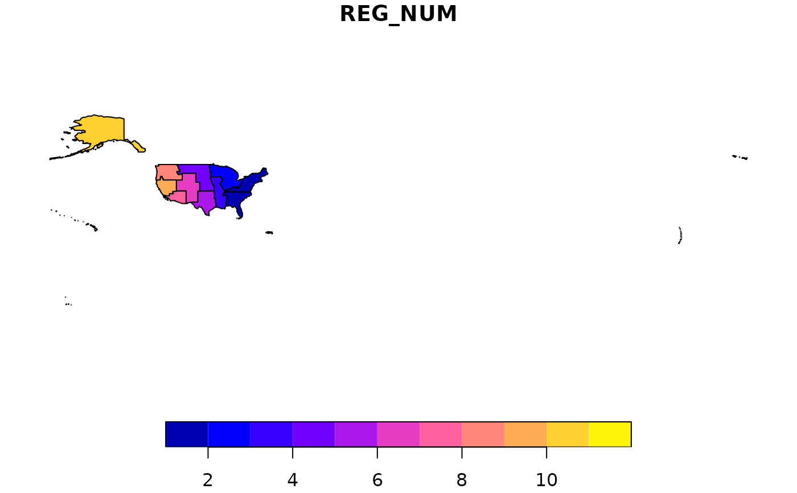
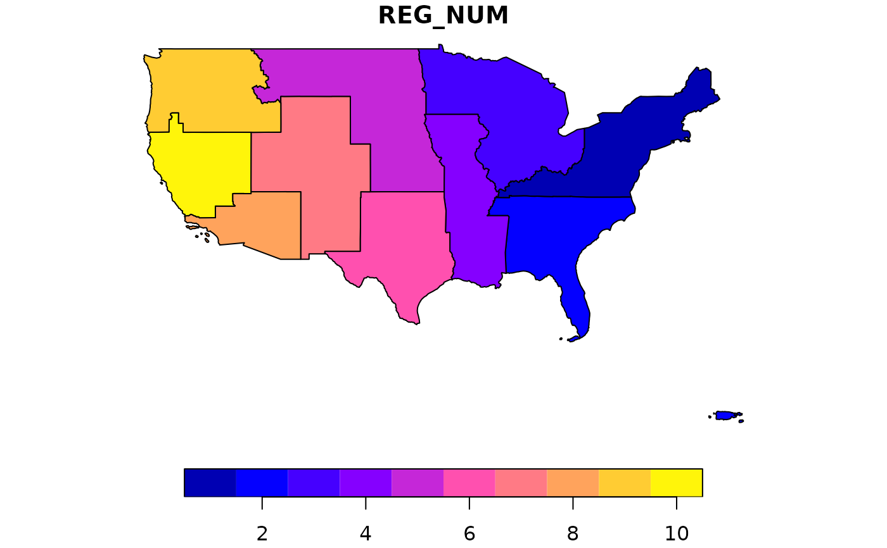

Unified interior region boundaries
regions.RdThis data set contains the, slightly simplified, 12 department of interior regions.
These data are simplified to save disk space, and for use with cartographic not for purposes of analysis, except for region coding.
They are imported directly and silently by the regionCoding function to determine which geographic areas to append to a file name.
These data are sourced from the US Department of Interior (DOI) https://www.doi.gov/employees/reorg/unified-regional-boundaries.
However, the 'REB_ABB' variable, which is ultimately used by eSTZwritR, is derived here and is not an officially sanctioned abbreviation by the USDOI.
Format
A data frame/tibble/sf with 3 rows and 2 columns:
- REG_NUM
Region number
- REG_NAME
Region name
- REG_ABB
Unofficial 2-3-letter region abbreviation
- geometry
sf geometry column
Examples
regions <- sf::st_read(
file.path(
system.file(package="eSTZwritR"), "extdata", 'regions.gpkg'
)
)
#> Reading layer `regions' from data source
#> `/home/runner/work/_temp/Library/eSTZwritR/extdata/regions.gpkg'
#> using driver `GPKG'
#> Simple feature collection with 12 features and 3 fields
#> Geometry type: MULTIPOLYGON
#> Dimension: XY
#> Bounding box: xmin: -179.2257 ymin: -14.59707 xmax: 179.8597 ymax: 71.44106
#> Geodetic CRS: WGS 84
plot(regions[,1]) # those aren't errors - they are some far flung pacific islands.

plot(regions[1:10,1]) # more continental of a focus.
